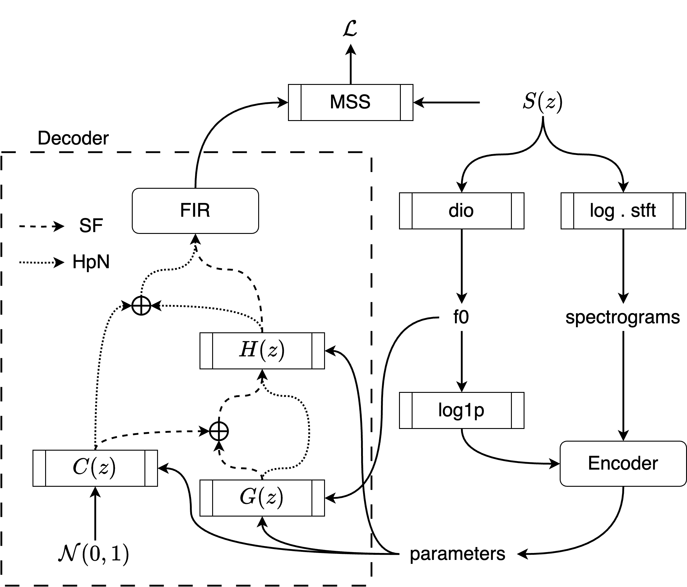

Chin-Yun Yu and György Fazekas
Centre for Digital Music, Queen Mary University of London
Training the linear prediction (LP) operator end-to-end for audio synthesis in modern deep learning frameworks is slow due to its recursive formulation. In addition, frame-wise approximation as an acceleration method cannot generalise well to test time conditions where the LP is computed sample-wise. Efficient differentiable sample-wise LP for end-to-end training is the key to removing this barrier. We generalise the efficient time-invariant LP implementation from the GOLF vocoder to time-varying cases. Combining this with the classic source-filter model, we show that the improved GOLF learns LP coefficients and reconstructs the voice better than its frame-wise counterparts. Moreover, in our listening test, synthesised outputs from GOLF scored higher in quality ratings than the state-of-the-art differentiable WORLD vocoder.
Figure 1: Flow diagram of the proposed end-to-end analysis-by-synthesis experiment. S(z) is the speech, G(z) is the harmonic oscillator, C(z) is the noise filter, and H(z) is the vocal tract filter.
This section contains the listening samples from the VCTK Corpus used for subjective evaluation in the paper. Reference is the ground truth audio, and the other columns are the copy-synthesis speech using the same clip with different models, which are the traditional linear predictive coding (LPC), the neural homomorphic vocoder (NHV), the differentiable WORLD vocoder (▽World), and the proposed source-filter GOLF vocoder (GOLF).
| Test clip | Reference | LPC | NHV | ▽World | GOLF |
|---|---|---|---|---|---|
| p361_004 | |||||
| p361_006 | |||||
| p361_008 | |||||
| p361_011 | |||||
| p361_024 |
| Test clip | Reference | LPC | NHV | ▽World | GOLF |
|---|---|---|---|---|---|
| p360_003 | |||||
| p360_005 | |||||
| p360_007 | |||||
| p360_009 | |||||
| p360_019 |
This section compares the following variants of the GOLF synthesiser: the original GOLF (GOLF-v1), the source-filter GOLF trained with frame-wise LPC and synthesise with frame-wise (GOLF-ff) or sample-wise (GOLF-fs) LPC, and the proposed source-filter GOLF with sample-wise LPC both used in training and evaluation (GOLF-ss).
| Test clip | Reference | GOLF-v1 | GOLF-ff | GOLF-fs | GOLF-ss |
|---|---|---|---|---|---|
| p361_004 | |||||
| p361_006 | |||||
| p361_008 | |||||
| p361_011 | |||||
| p361_024 | |||||
| p360_003 | |||||
| p360_005 | |||||
| p360_007 | |||||
| p360_009 | |||||
| p360_019 |
@inproceedings{ycy2024golf,
title={Differentiable Time-Varying Linear Prediction in the Context of End-to-End Analysis-by-Synthesis},
author={Chin-Yun Yu and Gy{\"o}rgy Fazekas},
booktitle={INTERSPEECH},
year={2024}
}